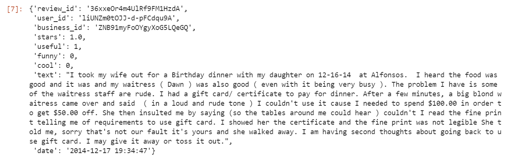

Data

We acquired our training and test data from Kaggle and our pre-sorted word list from UIC.edu
Our training and test data was hotel reviews from Datafiniti with 1-5 star ratings
Bag of Words

To preprocess the data, we tokenized the words of every review document.
We then had an array containing the frequency of each word, and each word in the corpus was assigned a numerical value
This allowed us to then use the data in our subsequent algorithms
Sentiment Pre-Processing
Most text sentiment analyzers are set to find only if a text is positive or negative.
We went a step further.
We used three potential classifications for our data: Positive, Negative, and Neutral.
This added a layer of complexity, but even still, we wanted to narrow the 5 star ratings into 3 categories.
To do this, we made ratings less than or equal to 2 stars negative,
ratings greater than 2 and less than 4 as neutral,
and ratings greater than or equal to 4 as positive.